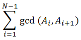

Ngày 18/4 là sinh nhật của Phú và Hằng muốn tìm một món quà thật đặc biệt được tạo thành từ N viên đá nhỏ, mỗi viên đá có một vẻ đẹp Ai. Hằng đính các viên đá này lên một sợi dây chuyền để tặng cho Phú. Khi đính lên sợi dây, hai viên đá gần nhau sẽ kết hợp với nhau tạo ra một vẻ đẹp là gcd(Ai, Ai+1) (1 ≤ i < N), trong đó gcd là ước chung lớn nhất (greatest common divisor) của 2 số. Vẻ đẹp của sợi dây chuyền được tính theo công thức:

Hãy giúp Hằng sắp xếp thứ tự các viên đá sao cho thu được một sợi dây chuyền đẹp nhất có thể nhé.
Dữ liệu nhập: Dòng đầu tiên chứa một số nguyên dương N - số lượng viên đá (2 ≤ N ≤ 15). Dòng tiếp theo chứa N số nguyên dương là vẻ đẹp của các viên đá (1 ≤ Ai ≤ 109)
Dữ liệu xuất: Một số nguyên duy nhất là vẻ đẹp lớn nhất có thể đạt được.
Cách xếp 8, 28, 14 sẽ cho tổng lớn nhất là 18 ( = 4 + 14)